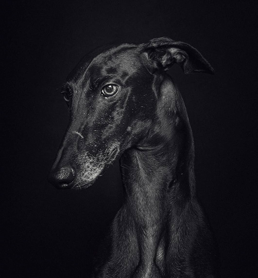

Galgojen elämä Espanjassa
Monet galgot elävät Espanjassa metsästyskoirina, erityisesti jänismetsästyksessä. Niitä pidetään usein vain työkaluina, ja kohtelu vaihtelee suuresti – osa saa hyvää hoitoa, mutta moni joutuu kärsimään laiminlyönnistä, huonosta ravinnosta ja jopa väkivallasta. Metsästyskauden jälkeen tuhansia galgoja hylätään tai tapetaan, koska niitä ei enää tarvita. Tämän vuoksi monet pelastetaan ja toimitetaan turvakoteihin, joissa ne odottavat mahdollisuutta parempaan elämään.
